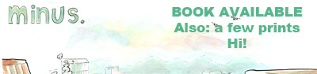

|
 |
first previous archive next |
| About the comic: Each minus strip is painted on a 15x20" piece of Illustration board. With this comic I am pretending I am making a comic strip for a newspaper in the early 20th century. A special newspaper that lets me use as much color as I want. I'm not much for comic strips so I don't know how long I'll be doing this one, so enjoy it while it lasts, I guess? It'll be updating every thursday until I suddenly stop! Making comics on giant paper is pretty neat though. Yeah. |
22/6/2006 - Heeeeeeeeey... simple strip today. so I scanned this one in four parts on a regular scanner. There was a dark band down the center of the page which I couldn't avoid but I did my best to make it not too bad. Not that my best is very good but you know. RSS feed is on the main kiwis by beat page now. Some guy was like "hey put up an rss feed" and I was like "ok." He suggested I use RSSpect and in a manner fitting for me, I didn't think about it at all until 11 PM tonight when I looked up an RSS tutorial. I laugh in the face of services provided for my convenience! And when I upload my comics to the interweb, I do not use an FTP program, I write the binary code in a sketchbook tear the pages out when I am done and ram it into the interweb with my fists! The feed is just the preview image that pops up with each update on the main page. Even more stuff to say! What is going on! New comics! My plan was to start putting a new comic online this summer, and I've been working on it for the past few weeks. I mentioned it to a few people before, but I've changed my mind and will start putting it online at the beginning of next year probably. I want to update with around 10 pages per week and have as much of the comic done as I can before anything goes online. There's another comic I might start putting up this summer, but I might just save it for the 2007 comics revue. Depends on how much content I can get out of the idea. What's this? More stuff to talk about here? That's right! I am plugging a website. This guy is awesome. Twice. I say that because I found two different comics at different times and thought "this is neat" before realizing they were by the same guy months later. MORE TO SAY WHEN WILL I SHUT UP JEEZ. This is a milestone for minus! 20 strips! Boy, never thought I'd get here, you know? Except for how I had outlines for 20 strips a week or so after I started the comic! But I mean that list of outlines could have caught fire or who knows what! What? You say that 20 strips isn't a milestone number? But it's a multiple of 10 right? Doesn't matter? Oh. Sorry gang. | |
|---|---|---|
KIWIS BY BEAT! | --Rumblo.com Pig Related Kristy! elftor Dinosaur Comics Unlingual Zxipi Copper-- Monica Furious Saturday Morning Breakfast Cereal Great Vagueness A lesson is learned Nine Planets without intelligent life Eightland Buttercup Festival |